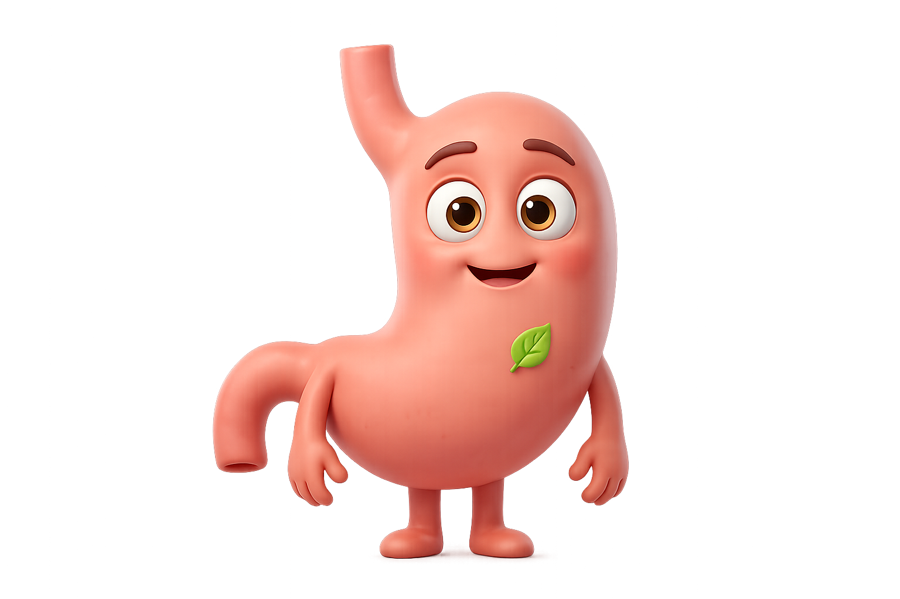

Current theme reads as a medical dashboard: cool sage gradient, Inter body, Bootstrap-era risk colors. Proposed: a cream canvas with a warm radial vignette, Fraunces for editorial moments, Nunito Sans for body, and a unified earth palette where olive, honey, and terracotta do all the work — including the risk scale.

Solid cream (#F4EADB) with a warm radial vignette — lighter at the top-center, a whisper darker toward the bottom corners. Two low-opacity accent washes add depth without color noise.
One family, three temperatures. Terracotta primary, olive for safe, honey for caution, clay-red for warning. Risk system finally belongs to the palette instead of fighting it.
Fraunces (variable, soft-cut serif) carries headlines, wordmark italics, and numerical drama. Nunito Sans handles body and UI chrome — humanist curves, never flat.
Hairline clay-tinted border rgba(74,48,28,0.08) + softer warm shadow. Reads as warm printed paper rather than glossy iOS glass. Muted text is taupe #8A7968, not cold system gray.